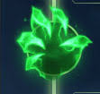

원거리 평타와 도트뎀 조합 덕분에 착취의 손아귀와 궁합이 좋은 대표적인 챔피언. CS를 다소 놓치더라도 초반 견제를 세게 들어가며 착취 스택을 쌓아 유지력을 가져가는 것이 주요 전략이다. 또한 결의 트리의 뼈 방패 등 방어적인 룬으로 연약한 티모를 약간이나마 더 단단하게 만들 수 있어 야스오나 카밀 등 맞으면서 싸울 수 밖에 없는 챔피언 상대로 좋다.
상대에 따라선 지배의 감전이나 어둠의 수확과도 궁합이 좋다. 평Q평으로 감전을 쉽게 터뜨릴 수 있어서 쉬운 상대를 만나 견제 위주로 가려고 한다면 딜교환마다 더욱 이득을 볼 수 있고 한타 페이즈에도 상대 딜러를 상대로 어느 정도 누킹이 가능해진다.
어둠의 수확은 버섯 위주 플레이에 도움이 되는데, 버섯을 밟고 체력이 까이면 알아서 수확이 터지기 때문에 스택을 쌓기도 용이하며 체력이 적은 적 상대로 버섯의 딜량이 굉장히 큰 폭으로 증가한다. 그러나 수확은 쿨타임이 45초나 되는만큼 원하는 때에 터뜨리기 쉽지 않아서 범용성은 떨어진다. 여담으로 어둠의 수확은 저티어나 양학할때 효율이 최고인 룬으로 평가받는데, 어수의 가장 치명적인 약점인 라인전도 저티어에서는 개념이 부족해서 그냥 흘려보내는 경우가 대다수고 어둠의 수확+폭풍의 결집은 시간이 시날수록 버섯의 딜을 핵폭탄으로 만든다. 바꿔 말하자면 베인이나 케일같은 라인전 약체가 아니고서야 드는것은 엄청난 리스크가 있는룬.
최근에는 집중 공격 룬의 채용률이 증가함에 따라 저레벨 킬 캐치력이 강화되기도 했다. 상대가 일방적으로 맞기만 하는 근접 뚜벅이 브루저일 경우 최상의 효과를 내는 룬이라고 볼 수 있다.